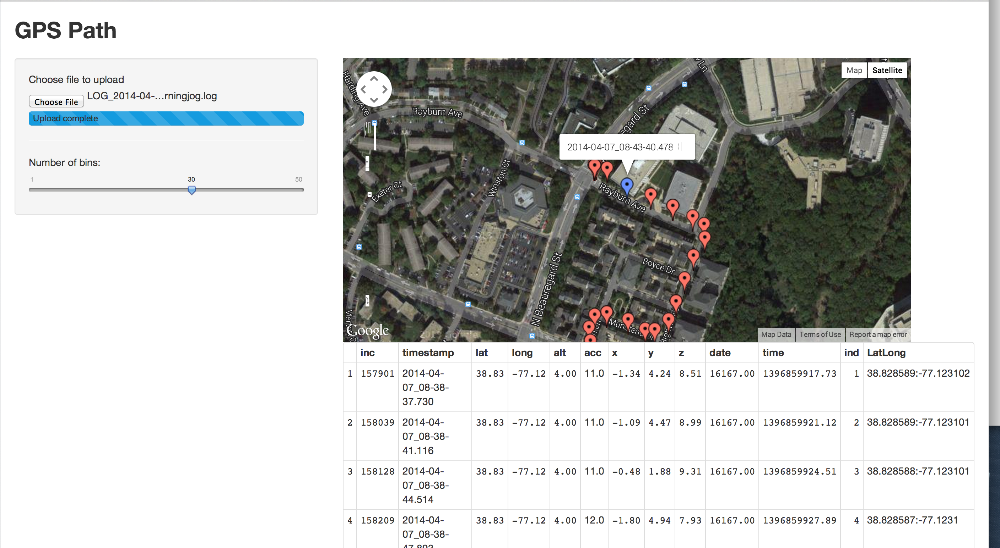

This is a project I thought would be interesting for both learning about text mining over time and learning something about topic modeling. This was done on the Journal of Machine Learning Reasearch. I wanted to see trends in when certain techniques were famous and how those evolved over time. The visualization shows has two types of nodes, topics and papers. Topic modeling was done to determine groups of papers, and attaches a paper to a topic at the point in time it was written. The results are very rough. The topics I was hoping for, Nueral Networks, Deep Learning and such did not appear. I need much more preprocessing to get there. I hope to write a blog post about it when I have more time o do it correctly. The topics now are worthless, {the, is, are}, {who, they, when} but the video turned out quite nice.
Here is a screenshot of an application I am working on that hope will help me train for a 5k. I am trying to add some dynamic time warping in space to see when and where I improve across runs. It also lets me upload files from my phone which I take with me to record lat/long and all accelerations.
This was some work where I wanted to turn some graphics work done in R into something interactive in the browser. Again I need to add more to what was done and write more about it but putting it here now becuase it looks nice.